MOU
MOU
이뉴스투데이
호원대 RISE사업단, 지역기업과 로컬콘텐츠 창업 협력 MOU 체결
호원대학교 RISE사업단은 ㈜지방·㈜작정과 함께 '지역특화 JB-로컬콘텐츠 창업가 양성사업' 추진을 위한 업무협약을 체결. 창업팀 탐방 프로그램, 리빙랩·동아리 활동, 스프린트 페스티벌 연계 등 실전 협력 추진.
호원대학교 RISE사업단이 지·산·학 협력으로 추진하는 실무 중심 창업가 양성.
비학위과정 · 동아리 · 리빙랩 · 경진대회로 이어지는 단계별 실전 트랙.
콘텐츠 기획부터 촬영·편집·유통까지 실무 전 과정
군산의 맛을 발굴하고 브랜드로 만드는 현장 실증
학부별 특성 기반의 실전형 창업팀 활동
언론보도 · 경진대회 · 성과공유회로 보는 JB-로컬콘텐츠 창업가 양성사업
MOU
호원대학교 RISE사업단은 ㈜지방·㈜작정과 함께 '지역특화 JB-로컬콘텐츠 창업가 양성사업' 추진을 위한 업무협약을 체결. 창업팀 탐방 프로그램, 리빙랩·동아리 활동, 스프린트 페스티벌 연계 등 실전 협력 추진.
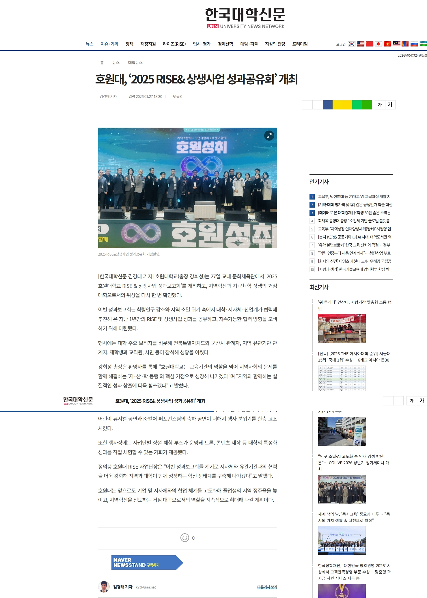
강희성 총장 "지·산·학 동행의 핵심 거점으로 성장"
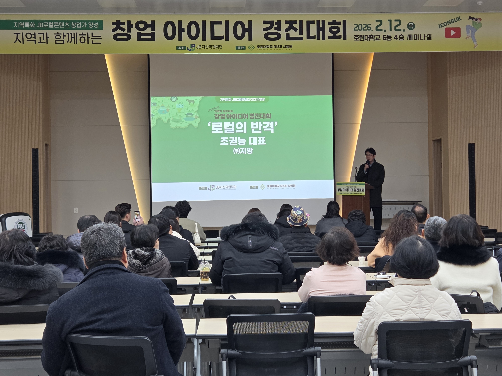
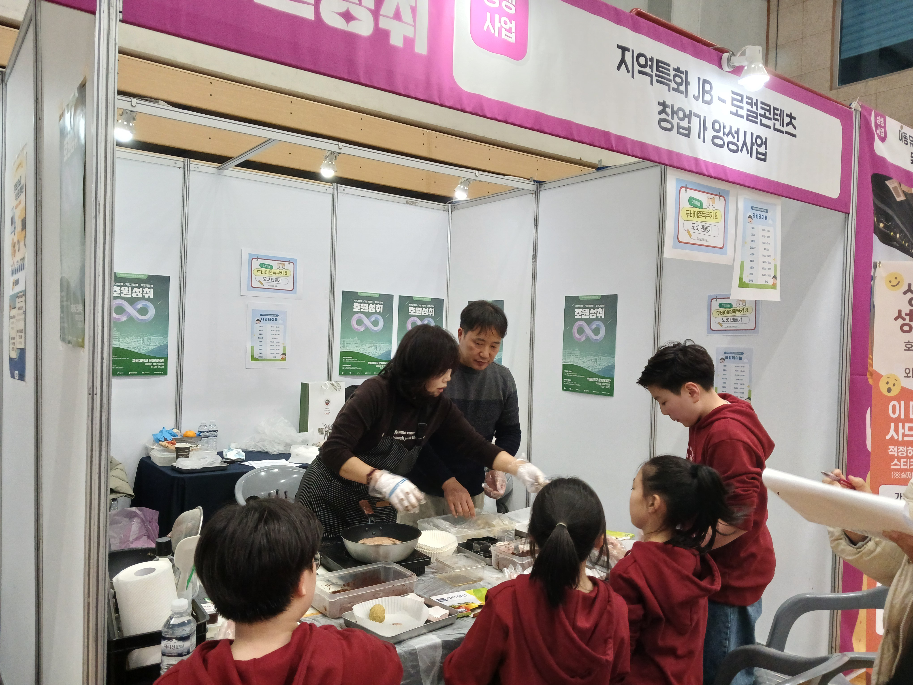

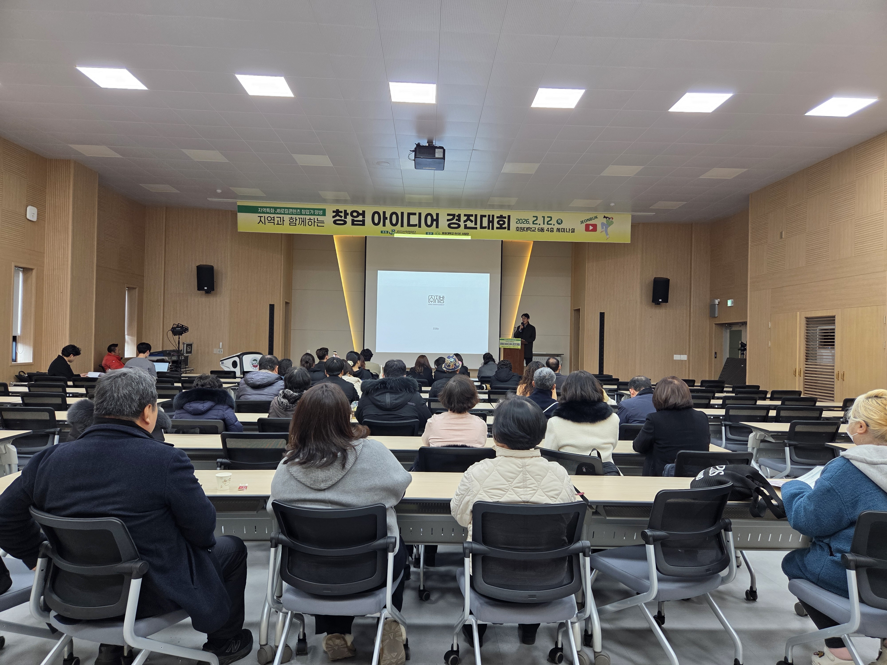
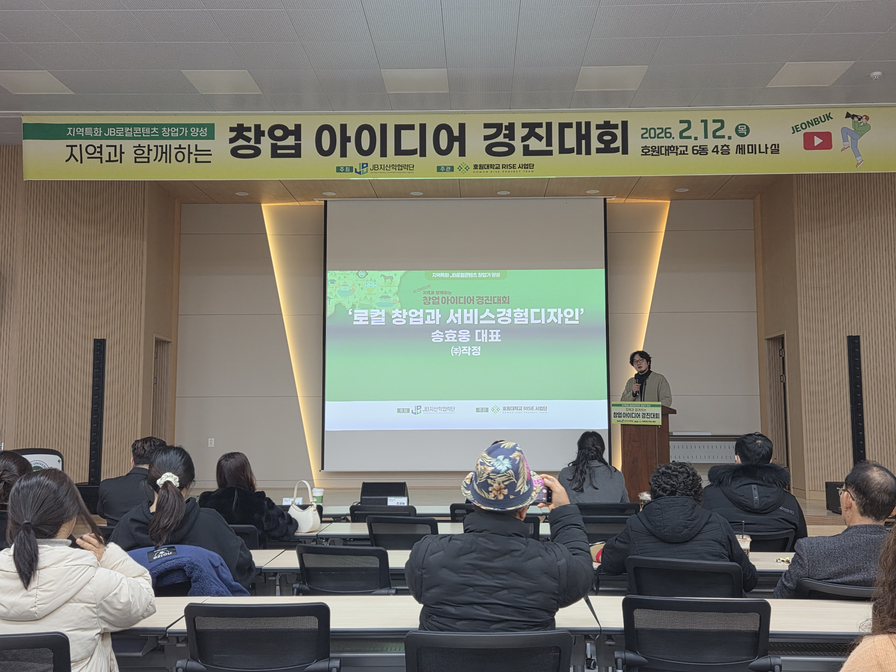
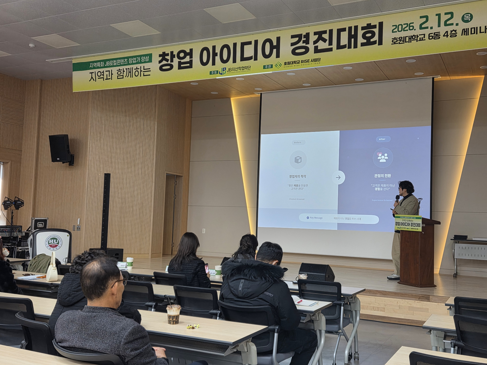
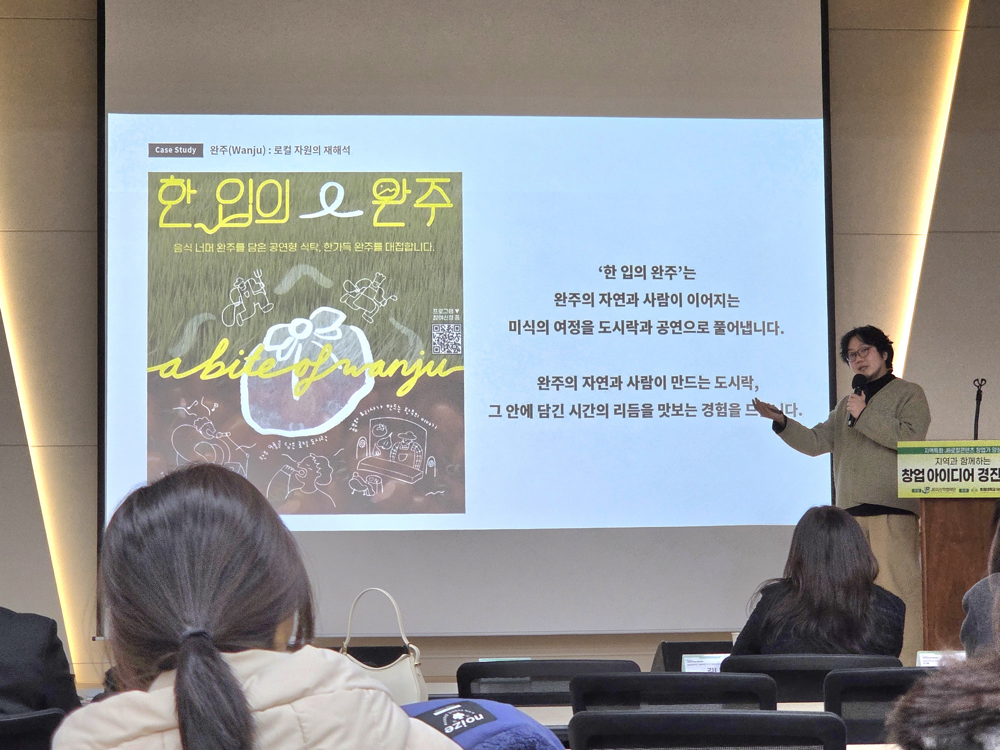
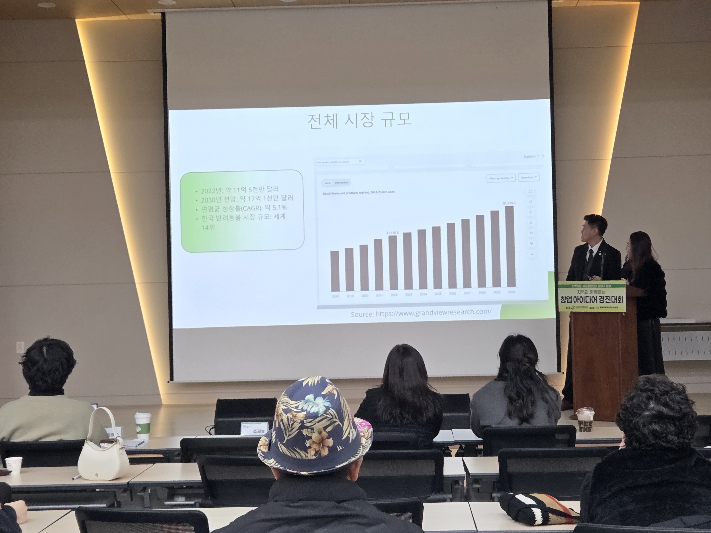
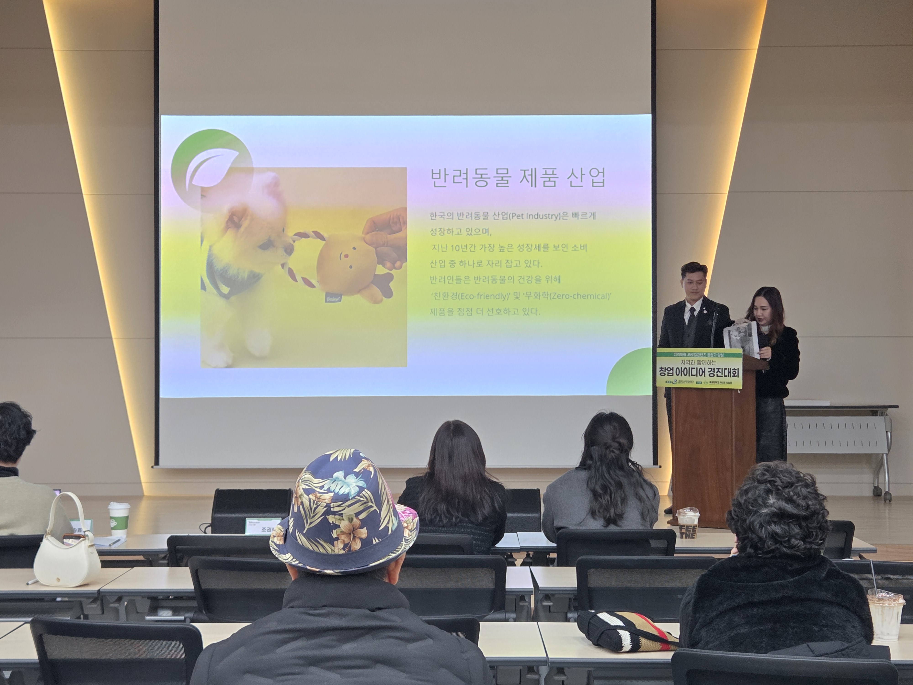
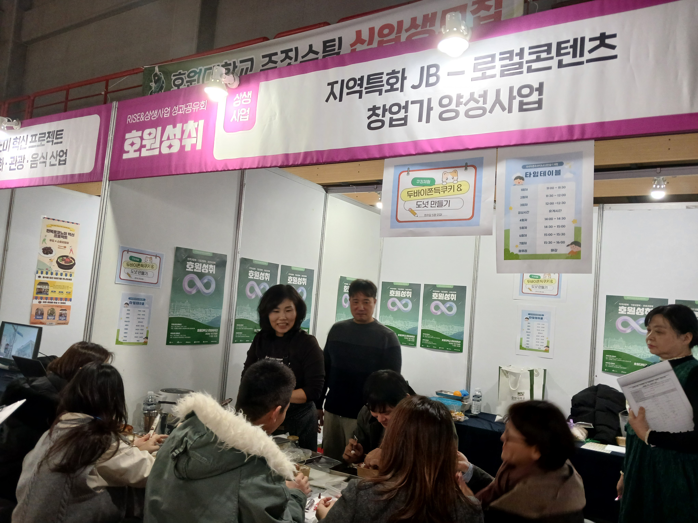
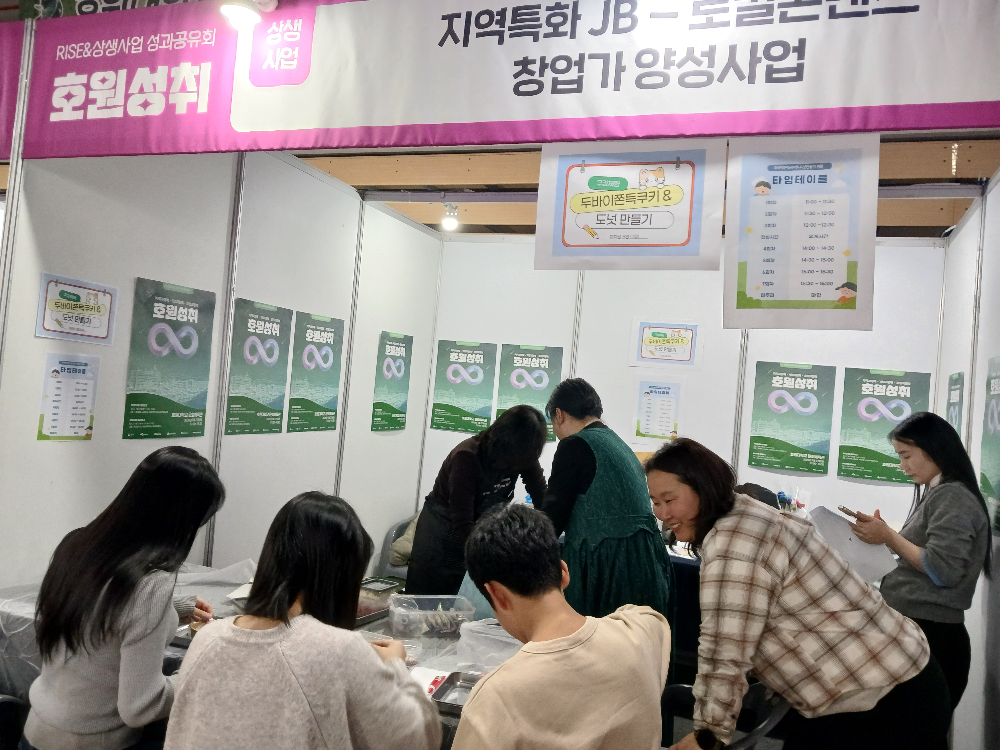
호원대학교 소재 군산을 거점으로 전북 14개 시·군과 연계한 지역 밀착형 창업 활동
호원대학교가 소재한 군산을 거점으로, 공연미디어·외식창업·호텔외식조리 학부가 지역 자원을 활용한 창업 프로그램을 운영합니다.
비학위 양성과정으로 콘텐츠·요리 기본기 확립
학부별 특성화 동아리로 팀 기반 실전 경험
지역 문제·자원을 현장에서 풀어내는 실전 프로젝트
팀 아이템을 무대에서 검증하고 피드백
스프린트 페스티벌·성과공유회로 지역 공유
호원대 RISE사업단과 업무협약을 체결한 지역 파트너 기업
"참여 기업 사업장 방문형 창업팀 탐방 프로그램 공동 운영"
"리빙랩·동아리 활동을 통한 실전형 창업 아이템 개발"
"지역과 대학이 함께 성장하는 혁신 생태계 구축"
"실무 중심 창업 교육으로 지역사회 기여 인재 양성"
드론을 활용한 역량증진 프로그램과 리빙랩으로 군산의 풍경·이야기를 미디어 콘텐츠로 기록.
군산의 로컬 맛집과 식재료를 발굴·기록하고 외식창업 아이디어로 연결하는 현장 탐사 프로젝트.
호텔·조리 전공 기반의 로컬 식재료 활용 메뉴 개발. 동아리 활동과 리빙랩이 연계된 풀 사이클 팀.
2026.03.23 · 호원대 교내 회의실 · 8명 참석
2026.02.12 · 팀 피칭·심사·시상
2026.01.27 · 호원대 문화체육관 · 체험 부스 운영
1인 크리에이터 · 로컬 식탁 · 비건 테이블